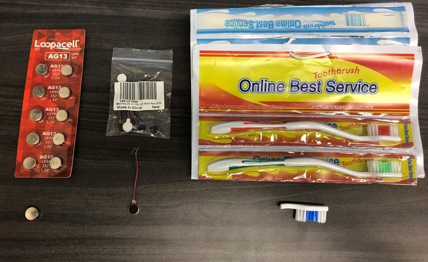
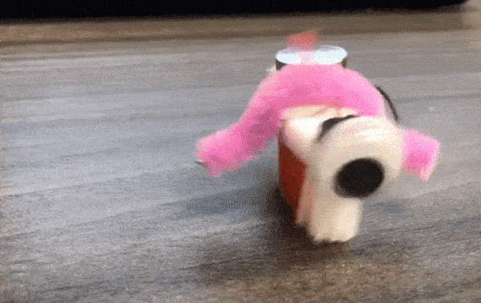
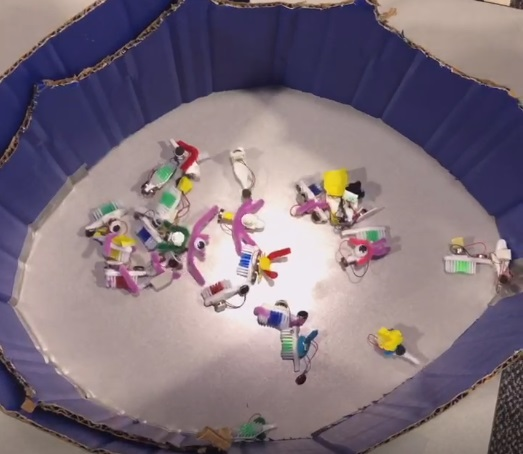
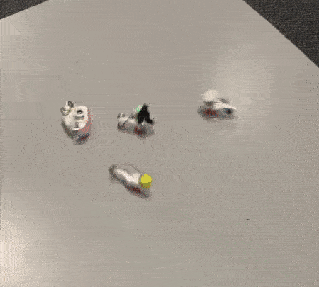

Bristlebots on the Cheap: Easy-to-Build Active Particles


Bristlebots are simple active particles powered by the vibration of a simple vibrating motor. Their intuitive construction and short list of components make them ideal for demonstrations of basic scientific concepts like friction or flocking behaviors.
Here's a tip from Rémi Boros on how to make simple bristlebots for classroom and for outreach at the cheapest cost possible. After all, the more you can make, the easier outreach with them is. While pre-assembled kits are commercially available, it’s far cheaper to order parts individually. All you need are toothbrushes, AG13 batteries, mobile phone vibration motors, and double stick tape. You may also want to invest in some pipe cleaners and googly eyes for aesthetics and stability.

You can find a step-by-step build guide on makerspaces, and using the components linked to here, you can make each bristle-bot for $2.
